Key Metrics
The Problem
Prices for the same product diverge across domains, regions, and categories — and sites change markup without warning. A naive scraper that parses on the fly loses history the moment a CSS selector breaks, and a flat URL list cannot express per-domain check intervals or currency normalization.
Watchdog treats targets as structured records (domain × region × category) with selector profiles, stores raw HTML before parsing so selector fixes can be re-applied, and splits fetch, parse, load, quality checks and alerts into separate orchestrated stages.
Architecture
Airflow orchestrates stages; Celery executes browser work; warehouse serves alerts + dashboard

Approach & Implementation
- Raw-before-parse: every fetch writes timestamped HTML to disk first; a manual Airflow backfill DAG is meant to re-parse stored files after a selector fix. An hourly cleanup job deletes raw files older than 30 days.
- Celery vs. Airflow separation: Celery runs per-target browser jobs with 3 retries and backoff (beat checks for due targets every 60 s); an Airflow DAG every 15 minutes orders the stages.
- Dimensional warehouse: star schema with dim_domain/region/category/product, parser profiles, a targets registry, fact_price_snapshot, and a dq_scraper_health table.
- Structured targeting: (domain, region) resolves to a parser profile; prices convert to USD in one layer, using a static rate table for now.
- Crawling controls: per-target check intervals and task retries with backoff are in place. robots.txt checks, request pacing and a per-domain circuit breaker are stubbed but not yet enforced; they are the next step before any live run.
- Alerts & analytics: per-target change thresholds via a common Notifier interface (Telegram + SMTP), plus a Streamlit dashboard for trends, cross-region comparison, availability, and scraper health.
Challenges & Solutions
Challenge: Selector rot destroys history
Sites rename price classes; a parse-on-fetch design would silently record months of nulls with no recovery path.
Solution: Raw-first snapshot store (30-day window)
Raw HTML is saved per fetch with a timestamp and URL hash, so a fixed parser plus the backfill DAG can re-parse anything still inside the 30-day retention window.
Challenge: Orchestration vs. execution confusion
One scheduler doing both DAG ordering and browser fan-out becomes a bottleneck and a retry mess.
Solution: Two-tier split
Airflow owns stage ordering; Celery + Redis owns per-target Playwright jobs with independent retries. The Airflow tasks currently call Celery in-process, so the two paths still need to be unified.
Challenge: Comparing prices across regions
Regional storefronts format prices differently ($1,234.56 vs 1.234,56 €) and in different currencies, so raw strings can't be compared directly.
Solution: Normalized thresholds
A single parser handles symbol and code detection and both decimal styles, then adds a USD column; thresholds are set per target, and operational-health alerts are separate from price alerts.
Outcome
The 24 parser and scraper unit tests pass; Docker Compose and a GitHub Actions workflow (lint → test → build → DAG import) are defined, and the dashboard demo runs on seeded price history.
Next steps: create a snapshot row on every fetch, fix the parse-queue filter, compare consecutive snapshots in the alert, and enforce robots.txt and request pacing before the first live run.
The design choices — raw-before-parse, Celery/Airflow separation, dimensional modeling — are the parts worth keeping: when a site changes and a parser breaks, stored HTML lets the data be recovered.